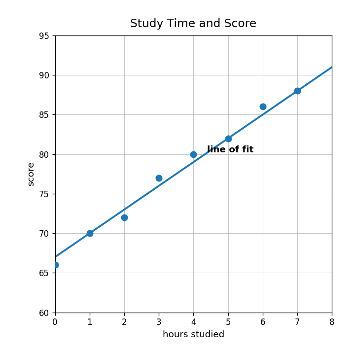
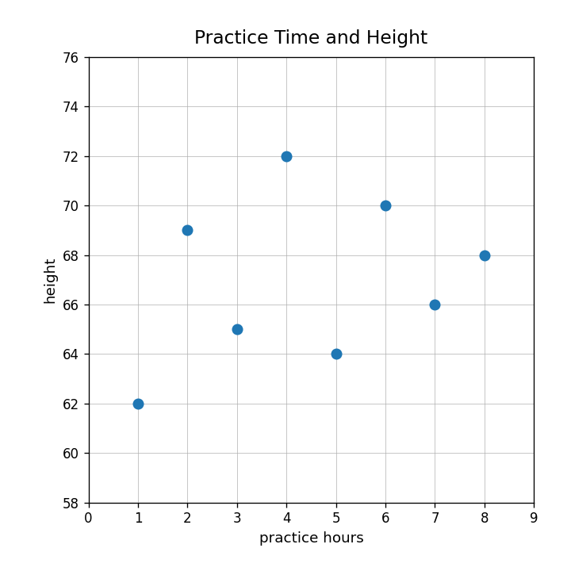
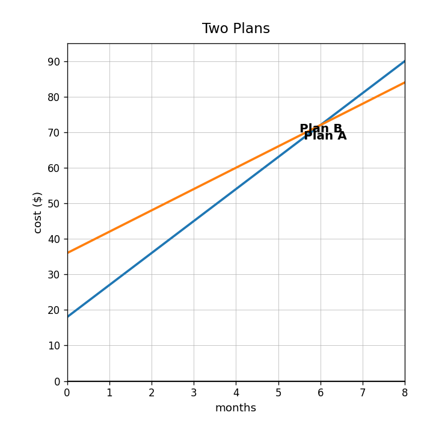

Look at the data display. Does the relationship appear positive, negative, or have no clear association?

What is a line of fit used for when studying a scatterplot?
Use the model on the graph to estimate the score for 6 hours of study. Interpret the prediction in context.
Use the scatterplot. Explain why a linear model is or is not reasonable for these data.

Which equation has the greater rate of change: $y=8x+12$ or $y=5x+40$?
Which relationship starts higher: $A=6x+18$ or $B=9x+7$?
| month | 0 | 1 | 2 | 3 |
|---|---|---|---|---|
| Plan C | 24 | 30 | 36 | 42 |
Identify the starting value and rate of change in the table.
Use the graph. Which plan starts higher and which increases faster?

Compare the table to $y=4x+16$. Which has the greater starting value? Which has the greater rate of change?
| $x$ | 0 | 1 | 2 | 3 |
|---|---|---|---|---|
| Table A | 10 | 17 | 24 | 31 |
Company A charges $14 plus $3 per mile. Company B charges $6 plus $5 per mile. Compare the starting costs and rates.
A student says $y=2x+50$ is always greater than $y=7x+10$ because it starts higher. Critique the reasoning.
Create two linear relationships where one starts higher but the other grows faster. Explain how the comparison changes over time.
What does the solution to an equation represent in a real-world model?
Determine whether $x=5$ makes $4x+8=28$ true.
A club charges a $12 fee and $4 per event. Write an equation for total cost $C$ after $e$ events.
Solve $3x+15=42$ and explain what the solution could mean in a context.